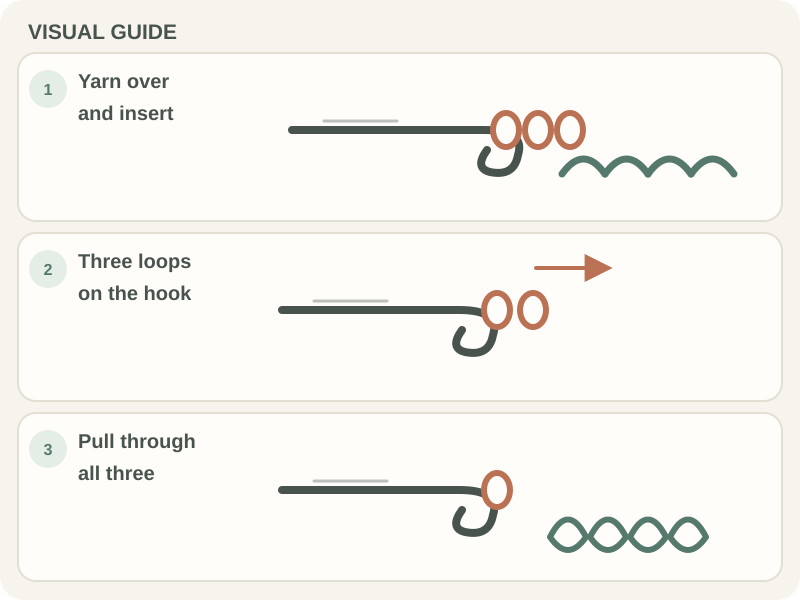

Stitches & Techniques · Beginner guide
How to Make a Half Double Crochet Stitch
A US half double crochet starts with a yarn-over, then draws up a loop and pulls through all three loops on the hook.

Use this stitch when a pattern calls for hdc. Its extra yarn-over makes a taller fabric than single crochet, while the final pull-through closes all three loops at once.
Before you begin
Make a foundation chain long enough for practice. The first row insertion point and turning-chain count depend on the pattern, so read that instruction before you begin.
Step-by-step instructions
- Yarn over, then insert the hook into the stitch named by the pattern.

Real crochet photograph by Pexels contributor via Pexels. - Yarn over again and draw a loop through the stitch; three loops should now be on the hook.
- Yarn over once more and pull through all three loops in one smooth motion.
- Repeat in each stitch, then count the completed hdc stitches before turning.

How to check your work
Each completed stitch has a top V, and the working loop remains on the hook. The row should have the number of stitches the pattern expects; do not count the turning chain unless the pattern says to.
Common beginner problems
- Only two loops remain after the last pull-through: The final yarn-over may have missed a loop. Pause before pulling and confirm three loops are on the hook.
- The stitch is too tight to work into: Relax the yarn feed or try a larger hook for a swatch; do not force the hook between split plies.
- The row count changes: Mark the first and last stitch, and follow the pattern’s rule for the turning chain.
A useful hdc checkpoint
After the draw-up step, pause and count three loops. Pull the final yarn-over through all three; that single motion completes the stitch.
Frequently asked questions
What does hdc mean?
In US patterns, hdc means half double crochet. A UK pattern may use different stitch names, so check its terminology note.
How many loops should be on the hook?
Three before the final pull-through; one active loop remains afterward.
Does the turning chain count?
It depends on the pattern. Follow its row instructions consistently.